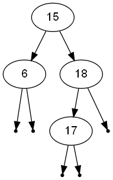

When implementing binary trees of some kind, one of the first utilities one writes is a visualization function that given a tree prints it to the screen.
The basic printing of a binary tree is almost always a variation of:
15
6
-
-
18
17
-
-
-
That is, 6 is the left (first) child of 15, 18 is its right child. 6 has ho children, 18 has only a left child (- are NULL nodes). Given a typical tree node declaration:
typedef struct bst_node_t bst_node;
struct bst_node_t
{
int key;
bst_node* left;
bst_node* right;
};
The printing code is easy to write:
/* Auxiliary for bst_print_ascii
*/
void print_offset(FILE* stream, int offset)
{
int i;
for (i = 0; i < offset; ++i)
{
fprintf(stream, " ");
}
}
/* Prints the BST horizontally as ASCII
*/
void bst_print_ascii(bst_node* tree, FILE* stream)
{
static int offset = 0;
print_offset(stream, offset);
if (tree == NULL)
{
fprintf(stream, "-\n");
return;
}
fprintf(stream, "%d\n", tree->key);
offset += 3;
bst_print_ascii(tree->left, stream);
bst_print_ascii(tree->right, stream);
offset -= 3;
}
The problem with this representation is that it isn't particularly helpful, because (especially for larger trees) it's quite difficult to understand. Printing trees properly in ASCII, level by level is a much more difficult job.
But there's a better way!
Graphviz - Graph Visualization Software - is a language (called DOT) and a set of tools for automatically generating visualizations of graphs. Graphviz is used heavily in academy to supply publication-quality visualizations for papers. It's also used by the Doxygen documentation tool for generating class hierarchies.
The power of Graphviz is in its powerful layout algorithms. You provide a textual description of the graph - which edges are there, what is connected to what, and so on, and Graphviz automagically lays out the graph in a visually pleasant way. The DOT language is a great example of a "mini-language" or an external DSL, and is very easy to use.
It isn't very difficult to craft the C code that auto-generates the DOT file for a given binary tree:
void bst_print_dot_null(int key, int nullcount, FILE* stream)
{
fprintf(stream, " null%d [shape=point];\n", nullcount);
fprintf(stream, " %d -> null%d;\n", key, nullcount);
}
void bst_print_dot_aux(bst_node* node, FILE* stream)
{
static int nullcount = 0;
if (node->left)
{
fprintf(stream, " %d -> %d;\n", node->key, node->left->key);
bst_print_dot_aux(node->left, stream);
}
else
bst_print_dot_null(node->key, nullcount++, stream);
if (node->right)
{
fprintf(stream, " %d -> %d;\n", node->key, node->right->key);
bst_print_dot_aux(node->right, stream);
}
else
bst_print_dot_null(node->key, nullcount++, stream);
}
void bst_print_dot(bst_node* tree, FILE* stream)
{
fprintf(stream, "digraph BST {\n");
fprintf(stream, " node [fontname=\"Arial\"];\n");
if (!tree)
fprintf(stream, "\n");
else if (!tree->right && !tree->left)
fprintf(stream, " %d;\n", tree->key);
else
bst_print_dot_aux(tree, stream);
fprintf(stream, "}\n");
}
For the tree shown in ASCII in the beginning of this post, the generated DOT file is:
digraph BST {
node [fontname="Arial"];
15 -> 6;
null0 [shape=point];
6 -> null0;
null1 [shape=point];
6 -> null1;
15 -> 18;
18 -> 17;
null2 [shape=point];
17 -> null2;
null3 [shape=point];
17 -> null3;
null4 [shape=point];
18 -> null4;
}
And here is the result (running the dot tool with PNG output):
Much nicer, isn't?
Graphviz is a tool for drawing graphs, not trees, so there's some tiny tweaking needed for trees. Particularly, to differentiate left from right pointers, I always draw both. The NULL children are drawn as empty dots. There are alternative ideas for drawing trees with Graphviz, but this one is IMHO both easy to implement and looks most familiar.